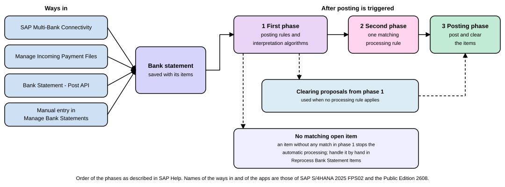

Bank Accounting and Cash Management
|
This content was generated with the assistance of AI and should be verified against the official documentation before being relied on in production. |
Every company has money in banks, and the books must agree with what the banks say. Two jobs follow from that. Bank
Accounting records which banks and accounts the company uses and brings the bank’s statements into the books, so that
a customer payment that appears on the statement is posted and the invoice it pays is cleared. Cash management looks
forward from the same data: how much money is in which bank today, and how much is expected in the next weeks. This page
explains the master data (banks, house banks and bank accounts), the two kinds of bank statement and the way the
system posts them, the posting rules and processing rules that decide what an item becomes, the cash position and the
liquidity forecast, and, briefly, where Treasury starts. It is written against SAP S/4HANA 2025 FPS02 (on premise and
Private Edition) and SAP S/4HANA Cloud Public Edition 2608. The ideas are shared; the apps differ in places, and the
page says where. A worked bank statement for the fictitious company code EX01 closes the page.
Before you read
-
Accounting Basics: debit, credit and the rule that a posting balances.
-
Charts of Accounts and G/L Accounts: the bank reconciliation account and the bank subaccount, the two kinds of G/L account that serve a bank.
-
Open Item Management and Clearing: what an open item is and how clearing settles it.
-
Accounts Receivable, Dunning and Credit: the customer invoice that an incoming payment settles.
-
Automatic Payment Program: the outgoing payments that later appear on the statement.
Key terms
-
House bank: a bank at which your company code keeps an account; it is identified by a bank ID.
-
House bank account: the representation of one bank account in Financial Accounting, identified by an account ID under the house bank.
-
Bank statement: the bank’s list of the movements and the balance of one account for a period.
-
Electronic bank statement: a statement that enters the system digitally, as a file or through a bank connection, and cannot be edited.
-
Posting rule: the older rule that says exactly which accounts a bank statement item posts to and whether it clears.
-
Processing rule: the newer rule, with conditions and actions, that SAP recommends instead of posting rules.
-
Bank clearing account: an interim account that a two-step posting rule uses between the bank and the customer or supplier account.
-
Cash position: how much money the company has, by bank, company, country and currency.
-
Liquidity forecast: the expected cash flows and closing balance for the coming days.
Banks, house banks and bank accounts
SAP separates three things that everyday speech calls "the bank".
-
A bank is the institution. SAP’s help names the SAP GUI transaction
FI01to define banks. -
A house bank is a bank with which a company code keeps accounts. In SAP’s words, each house bank of a company code is represented by a bank ID, and every account at a house bank by an account ID. You use the two to give the bank details. The Customizing activity Define House Banks (transaction
FI12_HBANK) creates them. In SAP’s training example the entries are the house bank key, the bank country, the bank key (the bank’s identification in that country) and, in a dialog, the bank name and city. -
A house bank account is the account ID under the house bank. It is what the payment program and the bank statement use to point at an account.
For the new-style bank account master data, SAP’s help adds a fourth layer: the bank account itself, created in the Manage
Bank Accounts app, separate from the house bank account. The help lists the master data this way: banks and house banks
with the Manage Banks (Deprecated) app or the transactions above, and house bank accounts and bank accounts with the
Manage Bank Accounts app. In the Public Edition the Manage Bank Accounts app (app ID F1366A) creates, displays, edits
and deletes bank accounts, can use a workflow or dual control process to open, change, close, reopen and review them,
manages bank correspondence and allows attachments.
Source: Defining Banks, House Banks, Bank Accounts, House Bank Accounts (SAP Help Portal, on premise), Define House Banks (SAP Help Portal, on premise), Manage Bank Accounts (SAP Help Portal, Public Edition)
What a bank account record holds
SAP’s cash management help says each bank account master record has these attribute categories:
| Category | What it holds |
|---|---|
General data |
Common account properties such as the account number, the IBAN, the properties for bank statement import and contact persons. |
Payment approvers |
The people who approve payments against the account. |
Overdraft limits |
The overdraft limits of the account. |
Additional data |
Closing dates, organizational data and technical data. |
House bank account connectivity |
The links between the bank account and the house bank account, or other account records in local or remote systems. |
Each bank account also gets a technical ID when it is created; number ranges for those IDs are set in Customizing, and the bank account type (an attribute you define yourself, useful as an analysis dimension in reporting and planning) is maintained in the same area.
Two rules worth knowing
-
For each bank account you can create only one house bank account of the ID category Central System: House Bank Account, and the company code of the house bank account must be the same as that of the bank. That central house bank account is then the single representation of the account in payment transactions. A message-control setting can lift the restriction.
-
After you create or change a house bank account, SAP asks you to update the payment method and bank selection of the payment program (the Customizing activity Set Up Bank Determination for Payment Transactions), because the payment program chooses the bank from those settings.
Source: House Bank Accounts (SAP Help Portal, on premise), Create Bank Account Master Data (SAP Help Portal, on premise), Bank Accounts (SAP Help Portal, on premise)
All creating and changing of these records needs an SAP system with a configuration role; it is not run here.
Bank statements: manual and electronic
A bank statement is the bank’s own record of what moved through an account and what the balance is. The system keeps two kinds, and the difference is only how they get in.
-
Electronic bank statements enter digitally. SAP names three ways: the system imports them automatically through SAP Multi-Bank Connectivity; you upload them with the Manage Incoming Payment Files app, for example as a spreadsheet file or an MT940 file; or they arrive through the Bank Statement - Post API. SAP says electronic bank statements are not editable.
-
Manual bank statements are the ones you create in the Manage Bank Statements app when a statement does not arrive in a supported digital form, for example a paper statement. A spreadsheet template inside the app reduces the typing. You can edit a manual statement while its status is Being Entered, Posting Aborted or Saved.
The on-premise help also describes the older electronic bank statement function (FI-BL). It lists supported formats (including SWIFT MT940, MultiCash and BAI), says the function is a central component for processing incoming payments and says items the system cannot post by itself are postprocessed by hand and then posted.
The Manage Bank Statements app (app ID F1564) gives an overview of the statements of all house bank accounts. It lets
you create, edit and post manual statements, view item details such as subitems, post statements with many items as a
background process, search by house bank account, date, status and number, upload items from a spreadsheet, delete and
reverse statements, and display intraday bank statements.
Source: Manual vs. Electronic Bank Statements (SAP Help Portal, Public Edition), Manage Bank Statements, F1564 (SAP Help Portal, Public Edition), Electronic Bank Statement, FI-BL (SAP Help Portal, on premise)
The posting category
Every statement in the Manage Bank Statements app has a Posting Category. With Posting to Be Processed the system processes the statement as usual and posts its items. With No Posting Processing the system only saves the statement, runs none of the accounting checks, and sets the statement and its items to completed without posting them. SAP names two cases where that helps: you do not want to post the statement but want the Cash Position app to be updated anyway, or no G/L account is assigned to the house bank account. You set the category per bank account in the Define Bank Account Settings - Bank Statements app, and per company code in Customizing.
How a statement becomes postings
Importing a statement does not by itself change the books. Posting does, and SAP describes it in three phases. The statement is saved first. If it came in through Multi-Bank Connectivity, the system then tries to post it automatically. Uploads and the API either post at once or only save, depending on the parameters you pick, and a manual statement is always only saved until you start the posting, immediately or as a background process. SAP recommends the background for statements with many items.

-
First phase. The system tries posting rules and interpretation algorithms. You decide in the Customizing activity Make Global Settings for Electronic Bank Statement which external transaction types trigger which posting rules. Matching open items are saved as interim clearing proposals.
-
Second phase. The system looks at the processing rules you defined in the Manage Processing Rules - For Bank Statements app. If exactly one rule has conditions that fit an item, it is saved for that item. If more than one fits, the second phase stops and the proposals of the first phase are used.
-
Posting phase. The system applies the processing rule it found, which performs the actions defined in it, for example G/L or AP/AR postings, and posts in parallel. If there was no processing rule, it uses the open items found in the first phase. If the first phase found no open item for an item, automatic processing stops and the item has to be handled by hand in the Reprocess Bank Statement Items app.
Posting rules
A posting rule says exactly how one kind of statement item is posted: which accounts take the debit and the credit and whether either side is cleared. SAP now recommends processing rules as the successor, with better features for managing items, so new work should start there, but posting rules remain what older systems and the first phase use. A rule is built from these parts.
-
Posting area. A rule has one or two posting records. In a one-step rule one document is created per item, and if the system cannot find the account or open item, the item is not posted at all. In a two-step rule the item is posted first to an interim bank clearing account, then to the subledger account: two documents per item, but the bank account balance in the G/L is up to date at once. A two-step rule does not clear the interim account itself; you clear it with the Clear Open Items Automatically app or with automatic clearing in the SAP menu.
-
Debit and credit account symbol. A symbol stands for one or more G/L accounts. Which accounts belong to which symbol is set in Make Global Settings for Electronic Bank Statement.
-
Posting type. It says which ledger type (G/L or subledger) and which side is affected, and whether that side clears.
-
On-account posting key. If the item can be assigned to a subledger account but not cleared against an open item, this key lets it post to the account without clearing. Without the key in the rule, such an item is not posted and no open item is cleared.
-
Special G/L indicator. It points to a special G/L transaction (bills of exchange, down payments, guarantees) so that open special G/L items can be cleared.
-
Compression. Several items can be combined into one posting item, usually for G/L postings.
The posting types SAP lists:
| Type | Name | Debit ledger | Credit ledger | Debit clearing | Credit clearing |
|---|---|---|---|---|---|
1 |
Post to G/L account |
G/L account |
G/L account |
none |
none |
2 |
Post to subledger account debit |
Subledger (AP/AR) |
G/L account |
none |
none |
3 |
Post to subledger account credit |
G/L account |
Subledger (AP/AR) |
none |
none |
4 |
Clear debit G/L account |
G/L account |
G/L account |
yes |
none |
5 |
Clear credit G/L account |
G/L account |
G/L account |
none |
yes |
7 |
Clear debit subledger account |
Subledger (AP/AR) |
G/L account |
yes |
none |
8 |
Clear credit subledger account |
G/L account |
Subledger (AP/AR) |
none |
yes |
SAP adds a posting type 9 that resets a clearing and reverses a given journal entry. Its own example is type 8: a debit in a G/L account (the bank) and a credit in a subledger account with clearing on the credit side, the payment of a customer invoice.
Processing rules
The Manage Processing Rules - For Bank Statements app creates and manages the rules that post to G/L and AP/AR accounts. A rule has conditions that say when it applies and actions that say what to do with the item. SAP lists these features: create and edit rules, share manually applicable rules with colleagues, deprecate outdated rules, use rules to process payment advices automatically, download and upload rules between systems, automate rules so that they run in the background, and manage templates.
Worked example: one statement for EX01
The numbers are made up. Company code EX01 (EUR) has one house bank account. Its statement shows an opening balance
of EUR 50,000.00 and two items: a customer paid the invoice of EUR 11,900.00 from the order-to-cash example, and the
bank charged EUR 35.00. The closing balance on the statement is the opening balance plus the items:
The first item posts as follows. With a one-step rule of posting type 8 the document is:
| Account | Debit EUR | Credit EUR |
|---|---|---|
Bank (bank reconciliation account) |
11,900.00 |
|
Customer (reconciliation account), clears the invoice |
11,900.00 |
With a two-step rule the item makes two documents and the bank balance is current after the first:
| Posting area | Account | Debit EUR | Credit EUR |
|---|---|---|---|
1 |
Bank |
11,900.00 |
|
1 |
Bank clearing account |
11,900.00 |
|
2 |
Bank clearing account |
11,900.00 |
|
2 |
Customer, clears the invoice |
11,900.00 |
The bank clearing account therefore shows a debit and a credit of 11,900.00 that add up to zero, but they are not
yet marked cleared. The clearing app or the automatic clearing run does that. The fee item posts with type 1,
a G/L posting without clearing: debit bank charges 35.00, credit bank 35.00. Each document balances (11,900.00 on both
sides, 35.00 on both sides). The bank account in the books then moves from 50,000.00 by +11,900.00 and -35.00 to 61,865.00
and agrees with the statement; if it did not, a difference would show an item the books are missing. Each line is written
to ledgers 0L and 2L.
The names of the accounts here are illustrative; which G/L accounts a symbol stands for is set in the global settings of the electronic bank statement, a configuration step that needs an SAP system and is not run here.
Cash position and liquidity forecast
Once statement balances are in, cash management can answer two questions: what do we have now, and what do we expect.
Cash position
SAP offers several apps. In the Public Edition the Cash Position - Today app (F1737) shows the forecasted cash
positions for the current date by location, company and currency, calculated from memo records and data sources of the
One Exposure from Operations hub. It can display by bank country or region, bank, bank group and company, switch
between charts and tables and export to a spreadsheet. The Short-Term Cash Positioning app (F5380) is in both
editions. It shows the cash positions by country or region, company code, bank account and currency, according to the
settings of a cash position profile that you define in the Define Cash Position Profiles app, and it can simulate cash
concentration for cash pools.
SAP also describes the end-to-end scenario of a cash position based on bank account balances. You choose how balances are updated per bank account through its transfer mode: Balance and Bank Statement Items takes balances from imported electronic statements, while Bank Statement Items Only (the default) expects balances imported from a spreadsheet or entered by hand in the Manage Bank Account Balances app. The Monitor Bank Account Balances app checks that balances are updated in time, because an accurate cash position depends on it.
Liquidity forecast
The Liquidity Forecast app (F0512, F0512A) forecasts the liquidity trend for the next 90 days from memo records and
the One Exposure from Operations hub. It shows aggregated cash flows and the closing balance, by company code or by
liquidity item, filtered by dimensions such as calendar day and planning group; it links to the Check Cash Flow Items
app for line items and shows the daily actual cash flows of past days. Cash managers use it with the broader liquidity
management functions: analyzing actual inflows and outflows, forecasting medium-term trends, and rolling planning, so
they can see which obligations are due and whether to invest or borrow.
Continuing the example, if the bank balance is EUR 61,865.00 and a supplier payment run of EUR 23,800.00 is due, the expected balance after the run is 61,865.00 - 23,800.00 = 38,065.00. This is only the idea of looking forward; the apps add many more sources and the exact calculation is theirs.
Cash operations
The on-premise help also lists daily cash operations: review the short-term cash forecast based on imported bank statements, navigate to cash flow line items, make bank transfers with an approval process, and manage cash pools and cash concentration. These functions need SAP S/4HANA Finance for cash management to be activated and the memo record and One Exposure from Operations settings to be configured.
Treasury, briefly
Cash management ends where Treasury begins. SAP describes the Treasury Workstation as a system for central treasury processes in which liquidity and risk management and the management of financial transactions and positions take place, integrated with distributed business systems from which it obtains data or to which it sends data. The help lists integration with cash management, in which bank and bank account master data are replicated from the Treasury Workstation to the distributed systems and cash flow data from other systems is integrated. Treasury and Risk Management has its own apps for financial transactions, risk and hedge management, and for treasury accounting. They are a separate subject and this page does not teach them.
On premise and Public Edition at a glance
| Topic | On premise (2025 FPS02) | Public Edition (2608) |
|---|---|---|
Banks and house banks |
|
Bank accounts through Manage Bank Accounts ( |
Bank statements |
Manage Bank Statements ( |
Manage Bank Statements ( |
Rules |
Posting rules and processing rules (Manage Processing Rules - For Bank Statements) |
Look up the rule apps in the Public Edition help |
Cash position |
Cash Position and Short-Term Cash Positioning ( |
Cash Position - Today ( |
Liquidity |
Liquidity Forecast ( |
Check the Public Edition help for the current apps before relying on them |
Common problems
-
Item not posted, nothing cleared. A one-step rule found no account or open item, or a rule that clears has no on-account posting key and the item could not be matched. The item waits in Reprocess Bank Statement Items.
-
Two rules fit one item. The second phase stops and the proposals of the first phase are used instead. Make the conditions of processing rules distinct.
-
Interim account stays open. A two-step rule never clears the bank clearing account. Run automatic clearing.
-
Cannot edit a statement. Electronic statements are not editable; manual ones only in the statuses Being Entered, Posting Aborted or Saved.
-
Error when linking a bank account twice. Only one central house bank account per bank account is allowed, in the company code of the bank, unless the message control is changed.
-
Statement saved but books unchanged. Check the posting category: No Posting Processing never posts.
Summary
-
A house bank is a bank at which a company code keeps accounts; a bank ID names it and an account ID names each account. Bank account master data adds IBAN, approvers, overdraft limits and links.
-
Bank statements arrive electronically (Multi-Bank Connectivity, file upload, API) and cannot be edited, or are typed in by hand as manual statements.
-
Posting runs in a first phase with posting rules and interpretation, a second with processing rules, and a posting phase; items without a match go to Reprocess Bank Statement Items.
-
A posting rule combines a posting area, account symbols, a posting type, an optional on-account key, a special G/L indicator and compression. SAP recommends processing rules for new work.
-
Cash position shows what is in the banks now; the liquidity forecast looks about 90 days ahead; Treasury is the next, separate layer.
References
-
Defining Banks, House Banks, Bank Accounts, House Bank Accounts (SAP Help Portal, on premise)
-
Create Bank Account Master Data (SAP Help Portal, on premise)
-
Electronic Bank Statement, FI-BL (SAP Help Portal, on premise)
-
Manual vs. Electronic Bank Statements (SAP Help Portal, Public Edition)
-
Manage Bank Statements, F1564 (SAP Help Portal, Public Edition)
-
Posting Category of Bank Statements (SAP Help Portal, on premise)
-
Overview on Automatic Bank Statement Processing (SAP Help Portal, on premise)
-
Manage Processing Rules - For Bank Statements (SAP Help Portal, on premise)
-
Cash Position - Today, F1737 (SAP Help Portal, Public Edition)
-
Short-Term Cash Positioning, F5380 (SAP Help Portal, on premise)
-
Cash Positioning Based on Bank Account Balances (SAP Help Portal, on premise)
-
Apps for Treasury and Risk Management (SAP Help Portal, on premise)